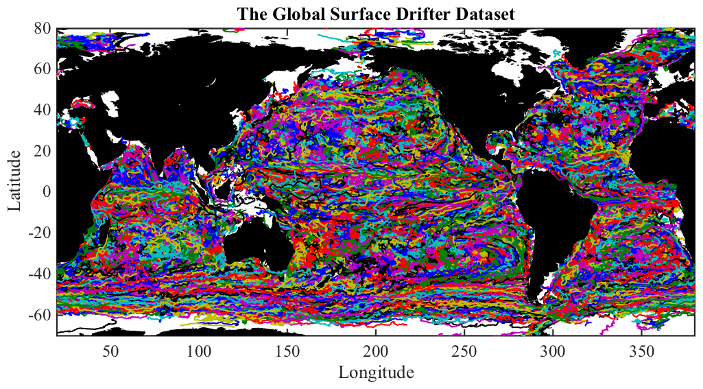

DRIFTERS Global surface drifter dataset from the Global Drifter Program.
_______________________________________________________________________

_______________________________________________________________________
DRIFTERS.MAT is a matfile containing the global surface drifter dataset
from NOAA's Atlantic Oceanographic and Meteorological Laboratory (AOML)
Global Drifter Program (GDP) Drifter Data Assembly Center, online at
http://www.aoml.noaa.gov/phod/dac/index.php
All gaps have been filled with linear interpolation, and only drifter
records with at least one week of data are returned.
LOAD DRIFTERS loads the structure DRIFTERS, with the following fields:
drifters.about Pointer to this document
drifters.id Drifter ids [18577 x 1 array]
drifters.buoy Drifter buoy type [18577 x 1 array]
drifters.num Date in DATENUM format {18577 x 1 cell}
drifters.lat Latitudes {18577 x 1 cell}
drifters.lon Longitudes {18577 x 1 cell}
drifters.t Temperature in centigrade {18577 x 1 cell}
drifters.cv Velocity u+iv in cm/s {18577 x 1 cell}
drifters.flag Drogue presence flag {18577 x 1 cell}
NUM, LAT, LON, T, CV, and FLAG are all cell arrays, with one drifter
per cell.
BUOY and FLAG are metadata information described in more detail below.
A number of routines are available in JLAB to work directly with such
cell arrays, see JCELL. In particular, CELLPLOT will plot such data.
After 'load drifters', type 'use drifters' to map the structure fields
into named variables in the workspace--id, num, lat, lon, etc.
To plot the entire drifter dataset, as in the above figure, type
load drifters, use drifters, cellplot(380,lon,lat), topoplot
where 380 specifies the right-hand axis of the plot, chosen to be
the longitude of the southern tip of Africa.
To convert the cell arrays into one long column vector, with a NAN
separating each drifter, type 'cell2col(num,lat,lon,t,cv);'.
DRIFTERS.MAT is distributed as a part of JDATA, a supplement to the
software toolbox JLAB, and is available at http://www.jmlilly.net.
__________________________________________________________________
Metadata
The fields BUOY and FLAG give metadata information. BUOY is the drifter
design type according to the following code:
1=SVP, 2=SVPB, 3=SVPC, 4=SVPBS, 5=SVPW, 6=SVPBW.
FLAG is true when the drifter's drogue is estimated to be present, and
false otherwise.
__________________________________________________________________
Dataset creation
The ASCII files on which DRIFTERS.MAT is based are available for
download from AOML at
http://www.aoml.noaa.gov/envids/gld/FtpInterpolatedInstructions.php
For completeness, the m-file ABOUT_DRIFTERS also contains the
processing steps used in the creation of DRIFTER.MAT.
If you wish to do this yourself, with JLAB on your search path,
'about_drifters --create' will recreate DRIFTERS.MAT by reading in the
original data as downloaded from AOML. This will take a while.
You'll need to make sure to put the directory containing the files on
your Matlab search path using ADDPATH, e.g. 'addpath ~/Data/aoml'.
As of January 2015, the AOML drifter dataset consists of three files:
buoydata_1_5000.dat
buoydata_5001_10000.dat
buoydata_10001_jun14.dat
These should placed in the directory specified above in order for
ABOUT_DRIFTERS.M to create DRIFTERS.MAT.
Note that the velocity CV in DRIFTERS.MAT is computed from latitude,
longitude, and time using LATLON2UV. It is not quite the same as the
velocity field produced by AOML.
__________________________________________________________________
See also JDATA, ABOUT_FLOATS.
'about_drifters --f' generates the sample figure shown above.
Usage: about_drifters
about_drifters --create
__________________________________________________________________
This is part of JLAB --- type 'help jlab' for more information
(C) 2007--2015 J.M. Lilly --- type 'help jlab_license' for details